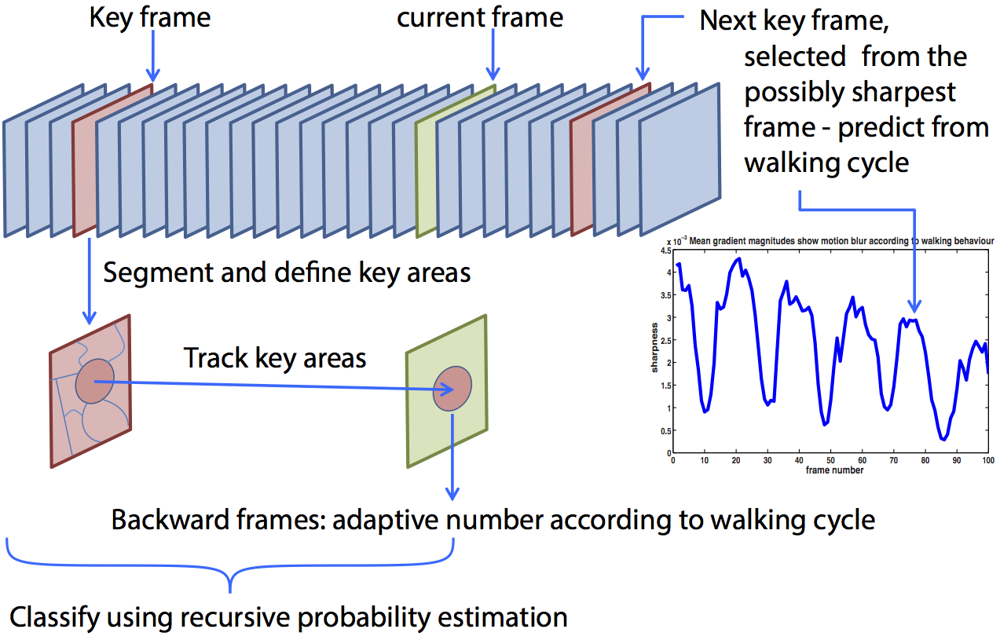

Nantheera Anantrasirichai
Numerous scenarios exist where it is necessary or advantageous to classify surface material at a distance from a moving forward-facing camera. Examples include the use of image based sensors for assessing and predicting terrain type in association with the control or navigation of autonomous vehicles. In many real scenarios, the upcoming terrain might not just be flat but may also be oblique and vehicles may need to change speed and gear to ensure safe and clean motion.
Videos captured with moving cameras, particularly those attached to biped robots, often exhibit blur due to incorrect focus or slow shutter speed. Blurring effects generally alter the spatial and frequency characteristics of the content and this may reduce the performance of a classifier. Robust texture features are therefore developed to deal with this problem.
A novel algorithm for terrain type classification based on monocular video captured from the viewpoint of human locomotion is introduced. A texture-based algorithm is developed to classify the path ahead into multiple groups that can be used to support terrain classification. Gait is taken into account in two ways. Firstly, for key frame selection, when regions with homogeneous texture characteristics are updated, the frequency variations of the textured surface are analysed and used to adaptively define filter coefficients. Secondly, it is incorporated in the parameter estimation process where probabilities of path consistency are employed to improve terrain-type estimation

Label 1 (green), Label 2 (red) and Label 3 (blue) correspond to the areas classified as hard surfaces, soft surfaces and unwalkable areas, respectively. The size of the circle indicates probabilities - bigger implies higher confidence of classification.
The gradient of a road or terrain influences the appropriate speed and power of a vehicle traversing it. Therefore, gradient prediction is necessary if autonomous vehicles are to optimise their locomotion. A novel texture-based method for estimating the orientation of planar surfaces under the basic assumption of homogeneity has been developed for scenarios that only a single image source exists, which also includes where a region of interest is too further to employ a depth estimation technique.